Pourvues de planches tenon rainure de 32 mm ou de planches en bois de 28 mm (Massaranduba), nos parois de boxes conviennent aussi bien pour des boxes intérieurs que pour des écuries extérieures.
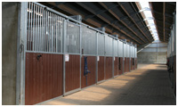 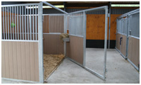 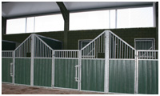 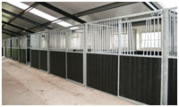 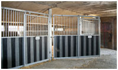 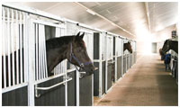 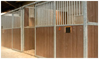Boxes intérieurs
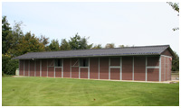 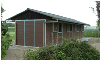 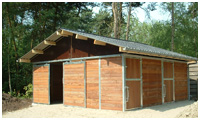 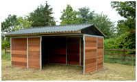 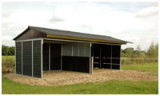
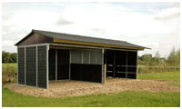
Écuries extérieures